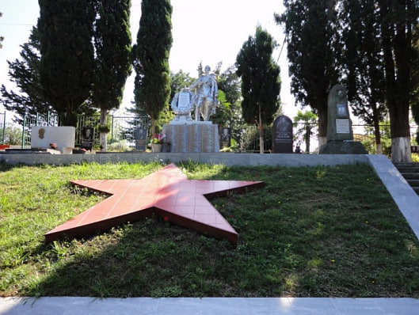
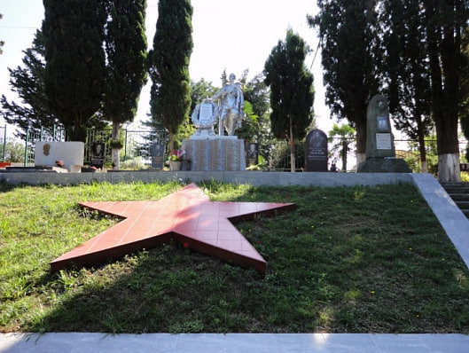

Братская могила советских воинов, умерших от ран в годы Великой Отечественной войны, 1941-1945 годы
Работа по созданию мемориального комплекса проходила в 1980-1985гг.
Автором проекта выступил сочинец Григорий Хачикович Назарьян (1918-2006)
Численность захороненных воинов в братской могиле ежегодно уточняется. К 2015 году в результате поисковой работы исследователей были выявлены новые имена погибших воинов. Эта цифра высечена на камене слева у Центральной лестницы мемориала и составляет 4 180 человек.
address
map 

Братская могила 71 советского воина, погибших в боях с фашистскими захватчиками, 1942-1943 годы
Количество погребенных – 194, известных – 121, неизвестных – 73.
address
map
Памятный комплекс землякам, погибшим в годы ВОВ, 1972 г.
В годы Великой Отечественной войны из села Сергей-Поле ушли на фронт 168 человек, из них семьдесят восемь пали смертью храбрых.
address
map